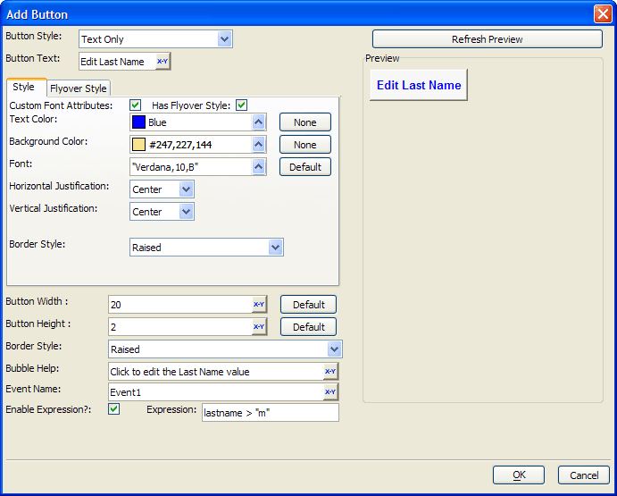

Add Button Dialog
The Add Button dialog specifies the characteristics of a button used when setting Advanced Text Properties for a Conditional Expression.

-
Select the Button Style. The options are:
-
"Text Only"
-
"Bitmap Only"
-
"Bitmap-Text"
-
"Text-Bitmap"
-
"Text over Bitmap"
-
"Bitmap over Text"
-
If the Button Style uses text, enter it into the Button Text control. You may click
 to use the Expression Builder to compose an expression that
returns a text caption.
to use the Expression Builder to compose an expression that
returns a text caption. -
If the Button Style uses text, optionally enable Custom Font Attributes to specify additional text formatting options.
-
Optionally, click
 to select
a color in the Text Color control.
to select
a color in the Text Color control. -
Optionally, click
to select
a color in the Background Color control. -
Optionally, click
to select a font in the
Font control. -
Optionally, select Horizontal Justification. The options are:
-
"Left"
-
"Center"
-
"Right"
-
Optionally, select Vertical Justification. The options are:
-
"Top"
-
"Center"
-
"Bottom"
-
Select a Border Style for the button. The options are:
-
"Raised"
-
"Flyover"
-
"Modern"
-
"None" - produces a round cornered button
-
If the Button Style uses a bitmap, click
to select an image. -
Optionally, enable Has Flyover Style and display the Flyover Style tab. Assign alternate style attributes for use when the mouse hovers over the button.
-
Optionally, change the Button Width. The measurement is in characters.
-
Optionally, change the Button Height. The measurement is in lines.
-
Optionally, enter Bubble Help that will appear when the mouse hovers over the button.
-
Optionally, check the Enable Expression control. Enter an expression that returns TRUE (.T.) or FALSE (.F.). This expression determines when the button is enabled.
-
Click OK to save your inputs and return to the Advanced Text Properties dialog.
Supported By
Alpha Five Version 8 and Above
Limitations
Desktop applications only.
See Also